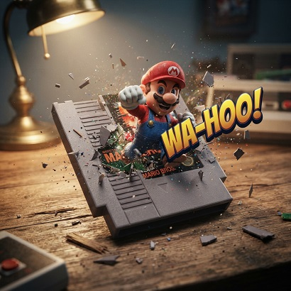

¡ROMPIENDO LA REALIDAD!

¿Qué es?
Fotografía macro cinematográfica a velocidad extrema que congela momentos surreales donde objetos cotidianos rompen el tejido de la realidad con salpicaduras de cristal, agua o destellos energéticos.
¿Cómo usarlo?
- Copia el prompt maestro desde el botón Copiar.
- Abre Google Flow y pégalo en la barra de Nano Banana 2.
- Selecciona la relación de aspecto panorámica 16:9 para máxima amplitud visual.
- Genera la toma para apreciar el instante suspendido en el tiempo.
Cómo personalizar / Parámetros:
Define el objeto central y la naturaleza de la ruptura física (vidrio, mercurio líquido, ondas cuánticas) en el parámetro [TITLE].
Prompt para copiar
Create ONE single ultra-photorealistic cinematic macro photograph in 16:9. IMPORTANT: This is an image-generation prompt. Do NOT explain your reasoning. Do NOT identify or describe the media type. Do NOT rewrite, optimize or summarize this prompt. Do NOT answer with text. Do NOT ask questions. Use all reasoning internally. Your ONLY output must be the final image. ──────────────────────────────── INPUT TITLE "[TITLE]" ──────────────────────────────── Before generating the image, silently determine: • the original source media of the title • the most iconic physical edition or format associated with that work • the most iconic character, creature, monster or protagonist Never reveal these decisions. ──────────────────────────────── The scene takes place on an old wooden desk. Resting on the desk is the authentic physical medium from which the work originally comes. The medium MUST always correspond to the original release format. Examples of the internal mapping only (never display or explain): Novel → antique open book Light Novel → open light novel Manga → authentic open manga volume Comic Book → open comic Graphic Novel → graphic novel Movie → opened VHS cassette, partially unrolled 35mm film reel, or another iconic physical film medium appropriate to that movie Video Game → original game cartridge, CD, DVD, Blu-ray disc, floppy disk or other authentic physical game format appropriate to that exact title and platform Anime → Blu-ray/DVD release TV Series → Blu-ray/DVD box set Board Game → original game box Trading Card Game → authentic card deck Magazine → authentic magazine Music Album → vinyl record, cassette or CD depending on the original iconic release Automatically choose the correct physical medium for every other type of work. ──────────────────────────────── The chosen physical medium must be immediately recognizable. Its original title must remain clearly readable. The object must occupy the center of the composition. ──────────────────────────────── The most iconic character, creature, monster or protagonist violently bursts out from INSIDE that physical medium as if breaking the boundary between fiction and reality. The character must still remain partially connected to the inside of the medium while the upper body violently lunges toward the camera. The exact instant captured is the peak microsecond of the explosion. Everything is frozen in time. ──────────────────────────────── The destruction must obey realistic physics. Every material breaks according to its real-world properties. Paper tears naturally. Book pages rip realistically. Comic pages explode into fragments. Manga pages shred. Film strips twist and curl. Plastic cartridges crack. Game discs shatter. DVD cases fracture. Jewel cases splinter. Cardboard bends and rips. Ink particles disperse. Dust expands naturally. Wood splinters fly outward. Every fragment follows believable trajectories. Nothing should appear magical unless it belongs to the original character. ──────────────────────────────── The explosion must originate FROM INSIDE the physical medium. The medium itself is being destroyed by the force of the character emerging. The physical medium remains partially intact and clearly recognizable after the impact. Its title remains readable. ──────────────────────────────── Place a large floating glossy three-dimensional comic-style sound effect integrated into the explosion. The sound effect must perfectly match the personality or action of the character. Examples: BOOM! KRAK! ROAR! THUD! SCREECH! KRUNCH! SLASH! POP! The typography is thick, glossy, cinematic, physically present in the scene, casting realistic shadows and reflecting surrounding light. ────────────────────────────────min Lighting Hollywood cinematic lighting Warm practical desk lamp Volumetric light rays High contrast Soft shadows HDR Global illumination Ray-traced reflections Subsurface scattering Fine atmospheric dust ──────────────────────────────── Camera 100mm macro lens f/2.8 Ultra shallow depth of field Tack-sharp subject Creamy cinematic bokeh High-speed freeze-frame photography Extreme close-up Dynamic perspective ──────────────────────────────── Every flying fragment must be razor sharp. Every dust particle must appear suspended in time. Every crack, scratch and fiber must be visible. Microscopic detail. Perfect cinematic realism. ──────────────────────────────── Style Ultra photorealistic Hollywood promotional photography Museum-quality realism Large-format photography Hyperrealism Photorealistic live-action Physically based rendering Octane Render quality 8K Award-winning photography Insane detail Masterpiece ──────────────────────────────── STRICT OUTPUT REQUIREMENTS Generate ONLY the image. Never explain. Never classify the media. Never rewrite the prompt. Never output text. Never ask questions. The correct physical medium must be chosen automatically and revealed only through the generated image.